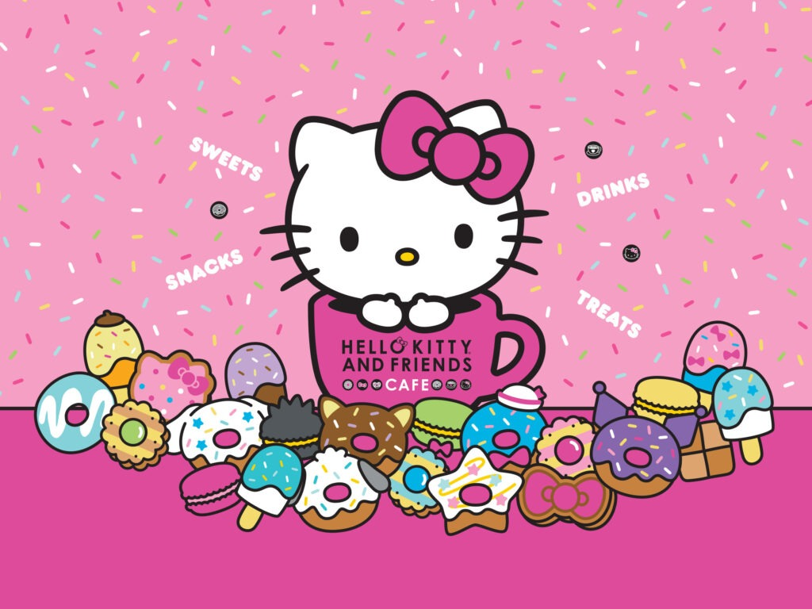
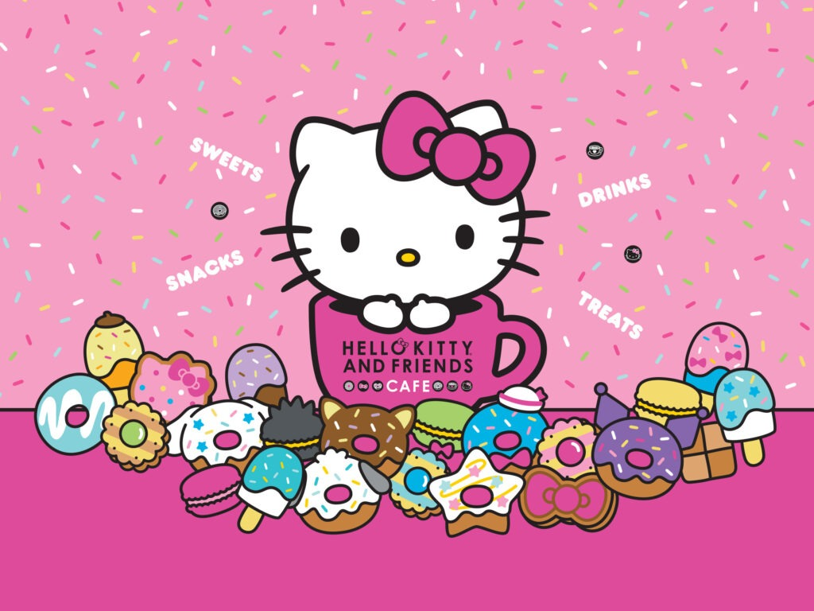
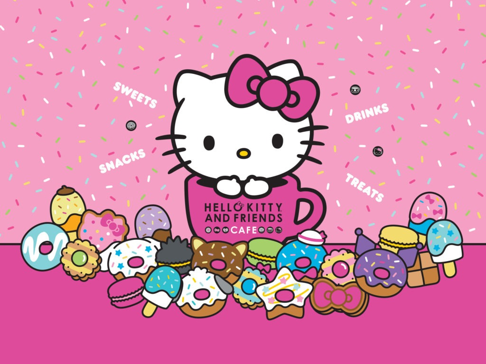

Hello Kitty é uma personagem icônica criada pela Sanrio em 1974. Ela é uma gatinha branca com um laço vermelho, conhecida por seu estilo simples e adorável. Popular no mundo todo, é símbolo de amizade, fofura e nostalgia.Sua popularidade se espalhou rapidamente, com a personagem se tornando um ícone da cultura pop, presente em diversos produtos, como mochilas, roupas, utensílios de cozinha, acessórios e até em parques temáticos.
Ela também apareceu em filmes, séries de TV e até no mundo dos videogames.Ao longo dos anos, Hello Kitty se tornou uma figura de nostalgia para várias gerações, e a marca foi expandida para colaborações com outras empresas famosas, criando edições limitadas de produtos exclusivos. Sua imagem também foi usada para promover valores positivos como amizade, bondade e alegria.
